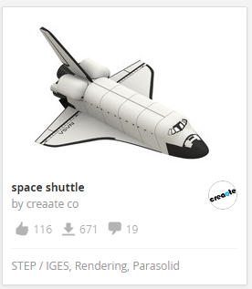

Introduction
3D printing is a growing part of the manufacturing field. It provides many exciting opportunities that allow parts to be made that were previously impossible.
This technology enables individuals to be creative and create their own masterpieces. These projects vary from practical prototypes to novelty items and everything in between.
This instructional website provides a walkthrough of either creating a part from scratch or downloading and printing an existing design. At Carnegie Mellon, the mechanical engineering department has access to several types of 3D printers, including the entry level of CubePro systems. Any mechanical engineering student has unlimited access to these printers and non-major students can access the technology with the help of a mechanical engineering student or faculty.
The following is an example of a model you can download.
Downloading models is recommended for first time users. If you would like to download a model, click here to begin the tutorial.
If you are a more advanced user, you can attempt to create the model from scratch by sketching. If you would like to sketch a model, click here to begin the tutorial.